Extern
Pagina 5 din 6. Toate verificările Fără Baliverne despre lumea de dincolo de graniță, cu surse din mai multe părți.
346 articole, cele mai noi întâi.

Coloniști israelieni au asediat 5 nopți case palestiniene în Cisiordania; armata a demontat două avanposturi, ambasadorul SUA vorbește despre „teroriști”
Coloniști israelieni au înconjurat timp de cinci nopți trei case palestiniene la periferia satului Qusra, din nordul Cisiordaniei, tăindu-le apa și curentul…

Luigi Mangione a pledat vinovat la acuzațiile federale de stalking în uciderea CEO-ului UnitedHealthcare — riscă închisoare pe viață, procesul de stat rămâne incert
Luigi Mangione, 28 de ani, a pledat vinovat vineri, 14 august 2026, la un tribunal federal din Manhattan, la două capete de acuzare de stalking care a dus la…

Franța, Germania și Marea Britanie își pregătesc un format propriu de negocieri pe Ucraina, de teamă să nu fie ocolite de Trump
The New York Times relatează, citând trei oficiali europeni, că Franța, Germania și Marea Britanie coordonează un format propriu de negocieri pentru a avea…
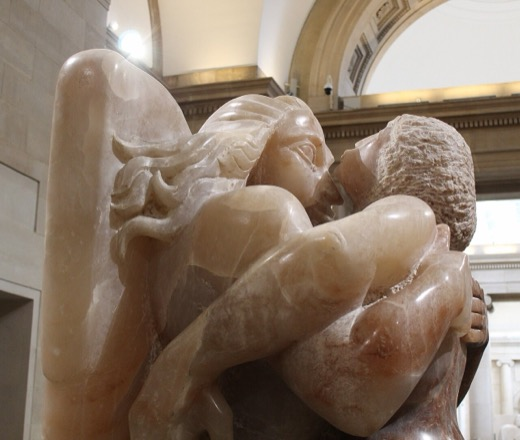
O judecătoare americană aprobă publicarea unor noi documente din dosarul Epstein, respingând opoziția lui Ghislaine Maxwell
Judecătoarea federală Loretta Preska a decis, pe 12 august 2026, că documente suplimentare legate de victimele lui Jeffrey Epstein pot fi făcute publice…
A murit Zhu Rongji, fostul premier chinez care a negociat aderarea Chinei la OMC — la vremea respectivă, criticat intern că a „vândut” prea multe concesii
Zhu Rongji, prim-ministrul Chinei între 1998 și 2003, a murit pe 12 august 2026 la Beijing, la 97 de ani. Este creditat drept arhitectul transformării…

Garda Națională rămâne la Washington DC până în 2029 — administrația Trump și presa se contrazic pe cifrele de criminalitate
La un an de la declararea unei „urgențe de securitate” în Washington DC, Pentagonul extinde desfășurarea Gărzii Naționale până în ianuarie 2029, cu un cost…
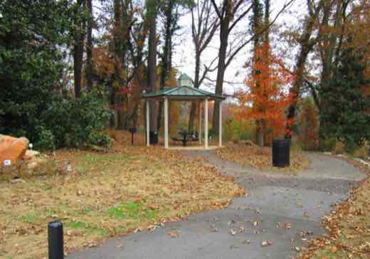
Ruptură în mișcarea MAGA: Tucker Carlson și Marjorie Taylor Greene acuză Trump că a „trădat” promisiunea „fără războaie noi”, discută un al treilea partid
Comentatorul Tucker Carlson și fosta congresmenă Marjorie Taylor Greene, ambii apropiați ai mișcării MAGA, acuză public că președintele Donald Trump a…
Tren deraiat lângă Lewes, în Anglia: ~20 de răniți; ipoteza caniculei ca posibilă cauză, neconfirmată oficial
Joi, 13 august 2026, un tren Southern Rail cu circa 150 de pasageri, plecat din Londra Victoria spre Eastbourne, a deraiat lângă gara Lewes (East Sussex)…
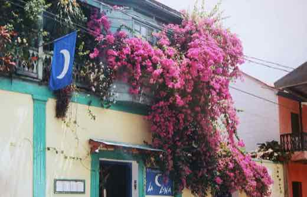
Cutremur de magnitudine 7,7 lângă insula Flores, Indonezia — alertă de tsunami emisă și ridicată, bilanțul victimelor în actualizare
Un cutremur de magnitudine 7,7 a lovit sâmbătă, 15 august 2026, la ora 05:58 (ora locală), în largul insulei Flores, Indonezia. A fost emisă o alertă de…

Administrația Trump cere Curții Supreme să permită continuarea construcției sălii de bal de la Casa Albă
Vineri, 14 august 2026, administrația Trump a depus o cerere de urgență la Curtea Supremă a SUA pentru a putea continua construcția sălii de bal de la Casa…
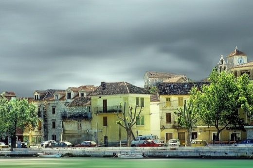
Incendiu „dintre cele mai grave din istoria Croației” lângă Omiš: aproape 2.000 de evacuați, 40 de răniți, un corp găsit
Un incendiu de vegetație izbucnit joi seară, 13 august 2026, lângă Lokva Rogoznica, a ajuns până în orașul turistic Omiš, de pe coasta croată. Autoritățile…
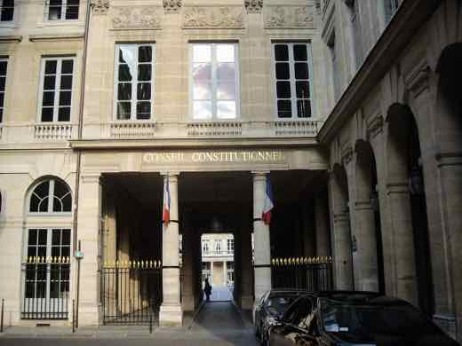
Franța: Consiliul Constituțional aprobă legea ajutorului la moarte, dar respinge interzicerea rețelelor sociale pentru copiii sub 15 ani
Vineri, 14 august 2026, Consiliul Constituțional francez a validat integral legea ce creează un drept la „ajutor la moarte” pentru adulții cu boli incurabile…
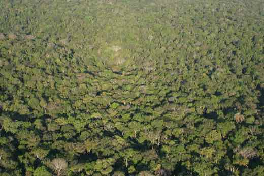
Defrișarea Amazonului brazilian a scăzut cu 36% și a ajuns la cel mai mic nivel din 2013
Sistemul de monitorizare DETER al institutului spațial brazilian INPE a înregistrat 2.874 km² de alerte de defrișare în Amazon între august 2025 și iulie…

Trump spune că va declara Strâmtoarea Hormuz „teritoriu al SUA” — un fost diplomat american spune că nimeni nu o controlează în întregime
Vineri, 14 august 2026, la un eveniment la Nassau County Police Academy (New York), Donald Trump a spus că „în curând” va declara Strâmtoarea Hormuz…
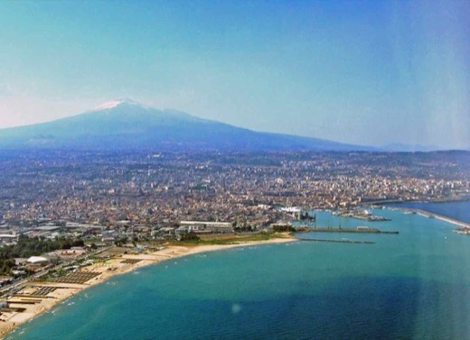
Etna, în cea mai lungă erupție de acest fel de la 2002: aeroportul din Catania rămâne închis a cincea zi la rând, în plin sezon turistic
Erupția vulcanului Etna, începută pe 6 august 2026, a forțat închiderea repetată a aeroportului din Catania, Sicilia, pentru a cincea zi consecutivă, cu…
Nigel Farage câștigă alegerea parțială din Clacton împotriva lui „Count Binface” — dar poliția contrazice motivul pentru care a lipsit de la declararea rezultatului
Liderul Reform UK, Nigel Farage, a câștigat joi, 13 august 2026, alegerea parțială din circumscripția Clacton, cu 63,3% din voturi, în fața unui…

Prăbușire de tunel la un proiect hidroelectric din Uttarakhand (India): morți și dispăruți, bilanț încă fluid
Joi seară, 13 august 2026, apă și moloz au inundat brusc un tunel în construcție al proiectului hidroelectric Vishnugad-Pipalkoti, în districtul Chamoli…
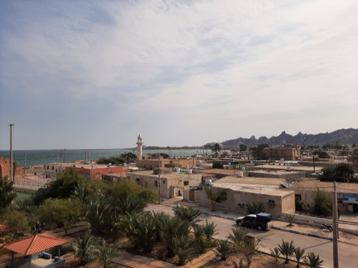
Al doilea atac în șase zile asupra unor tancuri ADNOC în Hormuz — Arabia Saudită, Qatar și Iordania condamnă Iranul
Joi seara, 13-14 august 2026, două nave ale companiei petroliere emiratiene ADNOC au fost lovite în Strâmtoarea Hormuz — al doilea incident de acest tip în…
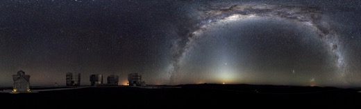
Fosta directoare de informații a Southern Poverty Law Center, Heidi Beirich, acuzată de fraudă de administrația Trump; apărarea vorbește despre un dosar motivat politic
Heidi Beirich, 59 de ani, fostă directoare de informații la Southern Poverty Law Center (SPLC), a fost arestată pe 12 august 2026 și acuzată de fraudă…
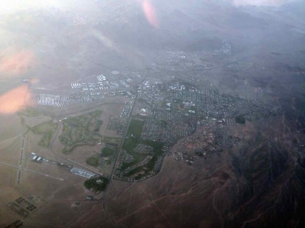
Un judecător din Nevada a respins, a doua oară, acuzațiile penale împotriva celor șase „electori falși” ai lui Trump din 2020
Pe 13 august 2026, judecătoarea Mary Kay Holthus (Clark County, Nevada) a respins pentru a doua oară dosarul penal împotriva celor șase republicani acuzați…
Ploi „fără precedent” în Chiba: cel puțin opt morți, mii de călători blocați la aeroportul Narita
În noaptea de 13 spre 14 august 2026 au căzut 367 mm de ploaie în 24 de ore în prefectura Chiba, lângă Tokyo — un record istoric pentru Japonia, care…
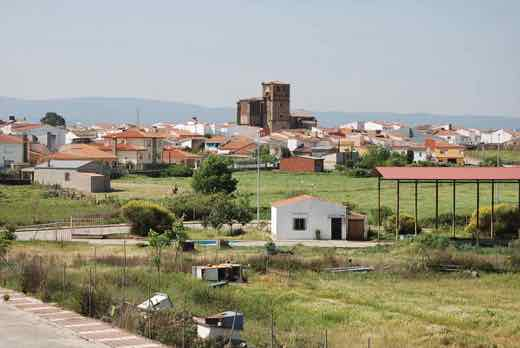
Spania amână închiderea centralei nucleare Almaraz cu trei ani, până în 2030 — guvernul spune că planul de renunțare la nuclear până în 2035 rămâne neschimbat
Guvernul Spaniei a publicat pe 14 august 2026, în Monitorul Oficial (BOE), ordinul ministerial prin care operarea centralei nucleare Almaraz este prelungită…
Lavrov susține că SUA sunt „mult mai profund implicate” în atacurile ucrainene în adâncul Rusiei — Moscova spune că a cerut explicații Departamentului de Stat
Ministrul rus de externe Serghei Lavrov a declarat pe 14 august 2026, în comentarii difuzate la televiziunea de stat rusă, că Rusia consideră SUA „mult mai…
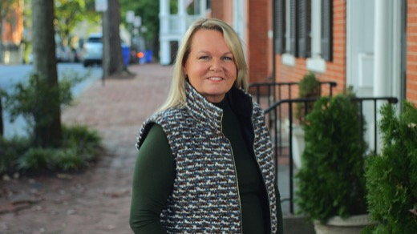
A treia moarte la Delaney Hall: ICE a confirmat decesul unui bărbat din Guatemala, dezvăluit public abia după o schimbare de politică privind raportarea
ICE a confirmat pe 14 august 2026 decesul lui José Chajón-Raxón, un bărbat din Guatemala, la câteva zile după ce a avut o criză la centrul de detenție privat…
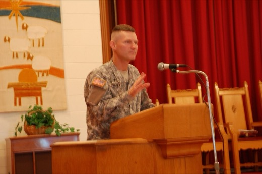
Trump ordonă Marinei SUA să renunțe la catapultele electromagnetice și să revină la abur pe viitoarele portavioane
Printr-un memorandum de securitate națională semnat joi, 13 august 2026, președintele Donald Trump a ordonat Marinei SUA să renunțe la sistemul…
SUA: DOJ cere retragerea cetățeniei pentru 25 de americani naturalizați, cea mai amplă acțiune de denaturalizare din istorie
Între 20 iulie și 3 august 2026, DOJ a depus acțiuni civile de denaturalizare împotriva a 25 de persoane din 17 țări, acuzate că au ascuns fapte grave la…
Casa Albă acuză peste 40 de țări că ajută China să ocolească tarifele americane, cu pierderi estimate la 19-26 miliarde de dolari pe an — experți independenți contestă precizia cifrei
Un raport al Casei Albe, intitulat „The Great Transshipment Scam”, susține că peste 40 de țări — de la Mexic la India — servesc drept verigi într-o…

Incendii noi forțează evacuări masive în Franța și Germania, în plin val de căldură european
Un incendiu izbucnit joi la Luglon (Landes, sud-vestul Franței) a ars peste 1.100 hectare și a dus la evacuarea a circa 525 de oameni; prefectura descrie…
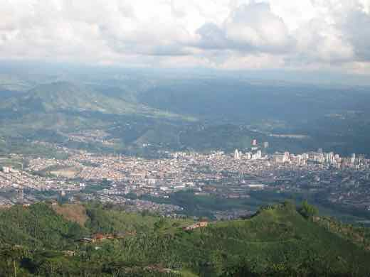
Cutremurul din Columbia: bilanțul urcă la 281 de morți, peste 12.000 de case distruse — fereastra de salvare se închide
🌍 Cutremurul de 7,4 grade din 10 august 2026, cel mai puternic din Columbia în acest secol, a ucis cel puțin 281 de oameni și a distrus peste 12.000 de…
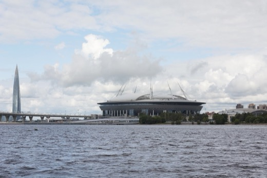
Ucraina a lovit rafinăria Gazprom din Salavat, la 1.300 km de graniță — cel mai adânc atac recent în teritoriul rus
În noaptea de 12 spre 13 august 2026, forțele ucrainene au lovit complexul de rafinare-petrochimie Gazprom Neftekhim Salavat, în Bashkortostan, la…
SpaceX a exclus Polonia din roaming-ul Starlink european, apoi a revenit după amenințarea cu retragerea celor 50 milioane dolari pentru Ucraina
SpaceX a exclus Polonia din zona sa europeană de roaming Starlink, fără explicație publică. După ce miniștri polonezi au amenințat cu reconsiderarea celor 50…
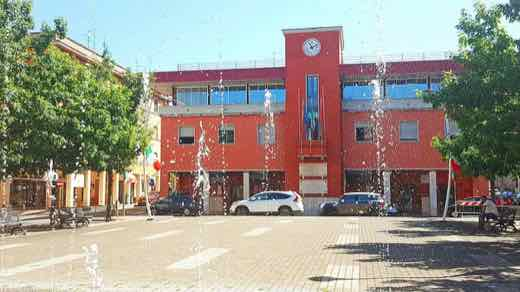
Explozie la uzina de muniție KNDS din Colleferro, lângă Roma — fără victime, cauza exactă e în anchetă
Joi, 13 august 2026, o explozie puternică a lovit uzina de muniție KNDS Ammo Italy din Colleferro, la circa 40-60 km sud-est de Roma; nu au fost raportate…
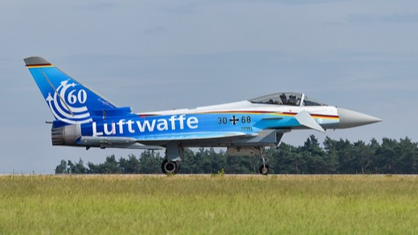
O dronă a intrat în spațiul aerian al Letoniei și a fost doborâtă de avioane NATO — a doua interceptare de acest fel din 2026
Vineri, 14 august 2026, o dronă a intrat în spațiul aerian al Letoniei, în regiunea Balvi, și a fost doborâtă de avioane NATO; armata letonă spune că a fost…
Tucker Carlson îl acuză pe Trump că a „amenințat deschis” cu arma nucleară Iranul — dar chiar Trump a negat public, la trei luni distanță, orice intenție de folosire
🌍 Fost aliat media al lui Donald Trump, Tucker Carlson l-a numit „homicid” și „incapabil de leadership” într-un monolog de 90 de minute pe 7 august 2026…

Consiliul Kennedy Center votează repunerea numelui lui Trump pe clădire și închiderea pentru doi ani de renovări
Consiliul de administrație al Kennedy Center — numit integral de Donald Trump — a votat, joi, 13 august 2026, cu 20 la 3, redenumirea instituției cu numele…
Portavionul USS George Washington pleacă spre Orientul Mijlociu să-l înlocuiască pe USS Abraham Lincoln, în timp ce apar relatări despre condiții proaste la bord
USS George Washington a pornit din Pacific spre Orientul Mijlociu pentru a-l înlocui pe USS Abraham Lincoln, aflat de peste 250 de zile în misiune (peste 200…

Un judecător federal respinge procesul administrației Trump împotriva Harvard privind antisemitismul
Judecătorul federal Richard Stearns, din Boston, a respins pe 13 august 2026 procesul prin care administrația Trump acuza Harvard de „indiferență deliberată”…
Premierul neozeelandez Christopher Luxon supraviețuiește unui vot de încredere în propriul partid, după o provocare de conducere a lui Chris Penk
Pe 12 august 2026, ministrul apărării Chris Penk a lansat o provocare de conducere împotriva premierului Christopher Luxon, într-o ședință închisă a grupului…
O bombă ascunsă într-un tomberon ucide un ofițer rus în Sevastopolul ocupat — FSB acuză Ucraina, identitatea victimei rămâne neconfirmată oficial
🌍 Un dispozitiv exploziv ascuns într-un tomberon a ucis joi dimineață un militar rus pe o stradă din Sevastopolul ocupat, spune FSB. Serviciul rus de…
Explozie la rafinăria Gunvor din portul Rotterdam: un mort, mai mulți răniți — cauza, încă neconfirmată oficial
🌍 O explozie a avut loc joi dimineață la terminalul Gunvor Energy din Europoort, cea mai mare zonă industrială a portului Rotterdam. Gunvor confirmă un mort…
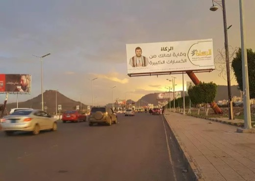
Ciocniri Houthi–forțe guvernamentale în Taiz, Yemen — ONU avertizează asupra celui mai mare risc de reluare a războiului civil de la armistițiul din 2022
🌍 Forțele guvernamentale yemenite spun că au respins un atac Houthi în provincia Taiz, în noaptea de miercuri spre joi, în timp ce ciocnirile se extind pe…
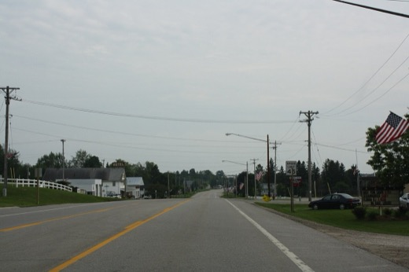
Canada se pregătește pentru tarife americane de 50% de la 19 august — Carney: „toate opțiunile sunt pe masă”
De la 19 august 2026, SUA urmează să impună tarife de 50% pe o serie de produse canadiene — alcool, lactate, ciment, materiale de construcție și altele —…

Administrația Trump plănuiește cel puțin 900 de milioane $ pe construcții la Casa Albă — o curte de apel spune că are nevoie de aprobarea Congresului
Administrația Trump plănuiește să cheltuiască cel puțin 900 de milioane de dolari pe construcții la Casa Albă — sală de bal, heliport, renovarea Aripii de…

Polonia anunță că a dejucat „în ultimul moment” un asasinat la Varșovia, comandat de Rusia asupra unui cetățean americano-ucrainean
Premierul polonez Donald Tusk a anunțat pe 13 august 2026 că serviciile de securitate au reținut, pe 7 august, un cetățean rus acuzat că fusese recrutat de…

Aliatul lui Trump, Mike Lindell, pierde primarele pentru guvernator în Minnesota și refuză să recunoască — acuză „anomalii” fără dovezi
În primarele republicane pentru guvernatorul statului Minnesota, Lisa Demuth l-a învins clar pe Mike Lindell (fondatorul MyPillow, susținut public de Donald…
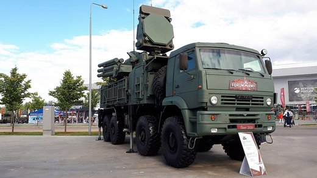
Franța își extinde „umbrela nucleară” spre nouă state europene; România, printre țările invitate la discuții
Președintele francez Emmanuel Macron a anunțat pe 2 martie 2026 că Franța își va mări arsenalul nuclear și va permite desfășurarea temporară a aviației sale…

Trump spune că SUA are „control total” asupra Strâmtorii Hormuz — dar traficul naval a scăzut cu peste 90%
Președintele american a scris pe rețelele sociale că SUA „are control total” asupra Strâmtorii Hormuz și vrea să-l „păstreze”. Datele publicate de presa…

O dronă Shahed cu reacție a lovit locomotiva unui tren cu 340 de pasageri în regiunea Odesa — mecanicul și asistentul lui au murit
În dimineața de 13 august 2026, o dronă rusească Shahed cu motor cu reacție a lovit locomotiva unui tren de călători din regiunea Odesa, ucigând mecanicul și…

Karoline Leavitt pleacă de la Casa Albă la finalul lunii august — motivul invocat: copiii
Donald Trump a anunțat pe 12 august 2026 că Karoline Leavitt, purtătoarea de cuvânt a Casei Albe, își încheie mandatul la finalul lunii, invocând nevoia de a…

NATO: Rusia poartă „întreaga răspundere” pentru încălcările spațiului aerian din Polonia și România
Consiliul Nord-Atlantic, reunit pe 12 august 2026 la nivel de ambasadori, a declarat că Rusia „poartă întreaga răspundere” pentru incidentele aeriene din…

Netanyahu respinge planul de 15 puncte al „Board of Peace” pentru Gaza — cere „dezarmare reală, nu fictivă” a Hamas
Duminică, 9 august 2026, premierul israelian Benjamin Netanyahu a declarat că Israelul respinge documentul de 15 puncte propus de „Board of Peace”…
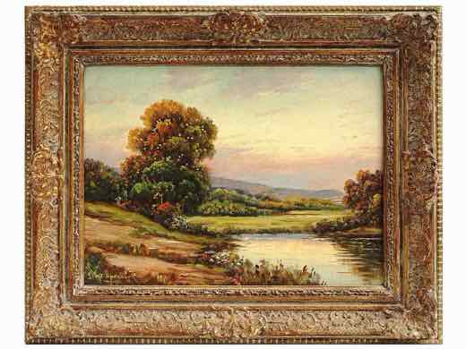
489.826 de hectare arse în UE de la începutul anului — al patrulea cel mai negru bilanț din 2012 încoace
La începutul lunii august 2026, incendiile de vegetație din Uniunea Europeană au ars deja 489.826 de hectare — al patrulea cel mai mare total din 2012…

UNICEF: circa 300 de copii uciși în Gaza în cele 300 de zile de la armistițiu. Ce spune, și ce nu spune, raportul
UNICEF a raportat, pe 6 august 2026, că în cele aproape 300 de zile de la armistițiul anunțat pe 10 octombrie 2025 între Israel și Hamas, aproximativ 300 de…

Zelenski spune că are, împreună cu aliații, „un plan” ca să-l oprească pe Putin — fără să dea detalii
La Forumul Tineretului Ucrainean, pe 12 august 2026, președintele Volodimir Zelenski a spus că el și partenerii internaționali au „un plan” de presiune…

Administrația Trump oprește finanțarea Medicaid pentru tratamente de tranziție de gen la minori — asociațiile medicale mari anunță proces
Administrația Trump, prin CMS (Centers for Medicare and Medicaid Services), condusă de Dr. Mehmet Oz, a anunțat pe 11 august 2026 o regulă finală prin care…
Frații Tate rămân în arest federal în SUA, cu audiere pe 13 august, în timp ce Marea Britanie cere extrădarea pentru 59 de acuzații
Andrew și Tristan Tate, arestați de autoritățile americane pe 18 iulie 2026 la Miami, rămân în custodie federală în timp ce Marea Britanie cere extrădarea…
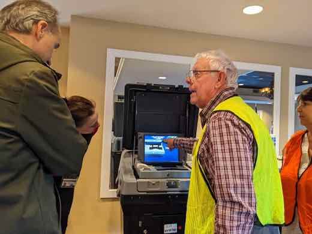
Trump nu exclude o „stare de urgență națională” legată de alegerile din 2026, după ce un moderator i-a propus ideea
Într-un interviu pe Real America's Voice, moderatorul Wayne Allyn Root i-a propus lui Donald Trump ideea de a declara o „stare de urgență pentru securitate…
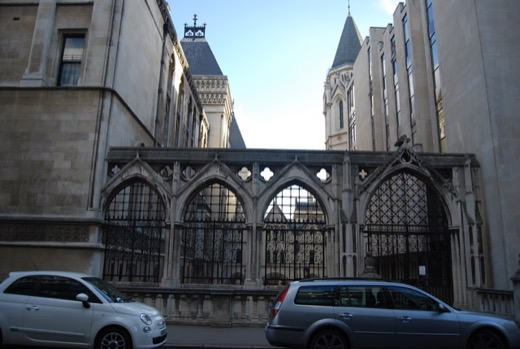
Andrew și Tristan Tate, arestați la Miami la cererea Marii Britanii — 59 de capete de acuzare, pe lângă dosarul încă deschis din România
Andrew și Tristan Tate, cetățeni americano-britanici cunoscuți din dosarul DIICOT deschis în România din 2022, au fost arestați de autoritățile federale…

SUA, prima țară care autorizează companii private să ducă operațiuni cyber ofensive contra grupurilor criminale străine
Președintele Donald Trump a semnat pe 12 august 2026 un memorandum prezidențial de securitate națională (NSPM) care creează, pentru prima dată în SUA, un…

Houthi au lovit cu rachete o navă comercială în Bab al-Mandeb — cifra morților diferă între surse
Nava de cargo Tihamah, deținută de o companie egipteană, a fost lovită marți, 11 august 2026, cu rachete balistice în strâmtoarea Bab al-Mandeb. Guvernul…